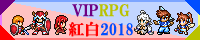
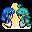
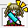
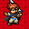
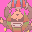
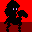
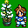
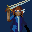
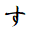
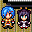

投票結果発表・全作品順位＆投票コメント
掲載内容について
総合順位上位から順番に順位と総合得点、及び各部門得点を掲載します。※SS部門の得点は総合得点に加算しないため右端に置いてあります。
※合計点が同じだった場合、SS部門の点数が高い方が上位となります。
※SS部門の点数も同じだった場合、投票数の多い方が上位となります。
※それでも同点だった場合は、同位とします。
順位表の見方
枠内の色がピンク色の作品は、投票で平均以上の投票数を獲得した作品です。枠内の色が薄い青色の作品は、作品未提出でSS部門に投票があった作品です。
枠内の色が白い作品はそれ以外の作品となります。
| ▼総合順位と各部門得点▼ | |||||||||||||||
| 順位 | No | Icon | 作品名/作者名 | 物語 | 技術 | ｷｬﾗ | 熱中 | 演出 | 遊易 | 斬新 | ﾜﾛｽ | ｴｯﾁ | ﾋﾄﾞ | 合計 | SS |
| 第1位 | 08 | ふたりの旅のきろく 牧場の牛肉 | 148 | 141 | 162 | 150 | 143 | 153 | 122 | 130 | 101 | 43 | 1293 | 157 | |
| 第2位 | 29 |  |
ウィンドⅠの伝説 ブレスオブザわてり かねたれ | 118 | 113 | 124 | 146 | 106 | 136 | 112 | 106 | 31 | 56 | 1048 | 103 |
| 第3位 | 40 |  |
もしもツクラーだったら れーえ | 69 | 105 | 89 | 70 | 110 | 82 | 91 | 74 | 73 | 20 | 783 | 78 |
| 第4位 | 09 | フレイム冒険記その２ 夢のキービィ | 72 | 98 | 87 | 103 | 67 | 79 | 75 | 53 | 29 | 34 | 697 | 91 | |
| 第5位 | 13 | もぐれケゴール洞窟 藻太郎 | 77 | 50 | 72 | 69 | 67 | 72 | 66 | 53 | 64 | 67 | 657 | 63 | |
| 第6位 | 02 | ダイスローグ F-man | 63 | 77 | 58 | 76 | 69 | 82 | 71 | 58 | 54 | 47 | 655 | 67 | |
| 第7位 | 19 | ksg8in1 2nd かすていら | 59 | 74 | 59 | 59 | 85 | 62 | 58 | 86 | 32 | 72 | 646 | 65 | |
| 第8位 | 05 | カマソッソの冬休み 池田さん | 81 | 67 | 78 | 65 | 73 | 54 | 47 | 79 | 38 | 46 | 628 | 74 | |
| 第9位 | 06 | THE・野球拳(VIP) 名雲きつね | 39 | 42 | 67 | 57 | 51 | 34 | 42 | 28 | 80 | 33 | 473 | 60 | |
| 第10位 | 12 |  |
MOSIMO TACTICS 池田超大作 | 32 | 34 | 40 | 36 | 37 | 39 | 42 | 52 | 50 | 58 | 420 | 46 |
| 第11位 | 51 | エターナリ草 のろし | 14 | 64 | 31 | 53 | 52 | 43 | 61 | 22 | 10 | 28 | 378 | 40 | |
| 第12位 | 54 | 青いやつと赤いやつ 脳内住民 | 43 | 36 | 48 | 27 | 49 | 33 | 25 | 56 | 10 | 34 | 361 | 19 | |
| 第13位 | 23 | ぽてまお 風見ケイ＆ひしお | 48 | 33 | 48 | 32 | 37 | 37 | 31 | 39 | 15 | 21 | 341 | 34 | |
| 第14位 | 28 | なすなすデートシミュレーター2018 †暗黒の扁桃腺の聖騎士† | 34 | 30 | 43 | 27 | 34 | 32 | 36 | 39 | 20 | 43 | 338 | 35 | |
| 第15位 | 04 | （自称）死霊術師と聖人の遺体 徳明 | 47 | 30 | 49 | 26 | 41 | 27 | 19 | 27 | 58 | 12 | 336 | 27 | |
| 第16位 | 37 |  |
メイジの暇潰死 メイジファンＳド | 26 | 24 | 36 | 28 | 27 | 32 | 36 | 37 | 25 | 47 | 318 | 40 |
| 第17位 | 10 |  |
かばね遣いと林檎 あきこ | 47 | 31 | 46 | 33 | 50 | 34 | 36 | 14 | 15 | 11 | 317 | 37 |
| 第18位 | 24 | 【水産すげぇ】FREELY TOMORROW chest | 10 | 67 | 44 | 19 | 33 | 30 | 67 | 24 | 11 | 8 | 313 | 38 | |
| 第19位 | 48 | 日がえりポテチクエスト KC.R | 37 | 39 | 41 | 26 | 48 | 41 | 27 | 28 | 9 | 14 | 310 | 45 | |
| 第20位 | 01 | 号外聖人 鷹 | 36 | 24 | 48 | 24 | 28 | 47 | 22 | 44 | 14 | 16 | 303 | 28 | |
| 第21位 | 35 | baka korekution ぬ | 31 | 29 | 27 | 23 | 30 | 29 | 27 | 41 | 16 | 41 | 294 | 25 | |
| 第22位 | 32 |  |
もしも紅葉舞い、雪降る時だったら お姉さん大好きマン | 43 | 27 | 46 | 26 | 37 | 30 | 20 | 28 | 9 | 11 | 277 | 29 |
| 第23位 | 16 | THUNDER DRACO -勇者アレックスの野望- ドロップ | 26 | 47 | 33 | 38 | 37 | 42 | 26 | 12 | 6 | 8 | 275 | 34 | |
| 第24位 | 03 | 勝ち抜きボスバトル紅白2018 すいかびぃ | 23 | 33 | 38 | 39 | 35 | 37 | 21 | 16 | 6 | 4 | 252 | 41 | |
| 第25位 | 18 | ファイナルもしもファイト SHIKUKO | 26 | 38 | 25 | 38 | 29 | 26 | 25 | 14 | 3 | 9 | 233 | 33 | |
| 第26位 | 38 | スーパーごちうさＲＰＧ ナインボルト | 20 | 16 | 27 | 19 | 17 | 22 | 23 | 21 | 20 | 33 | 218 | 24 | |
| 第27位 | 07 | レッツゴー！冥界ガーディアンズ アクハデジャスティス丸 | 24 | 18 | 23 | 28 | 24 | 25 | 21 | 25 | 9 | 21 | 218 | 20 | |
| 第28位 | 34 | VTuberバトルロワイアル おりおん | 29 | 15 | 28 | 23 | 19 | 18 | 24 | 18 | 21 | 22 | 217 | 18 | |
| 第29位 | 26 | 万華郷 ～りめいく～ FAH-Q（ふぁーきゅー） | 27 | 20 | 28 | 20 | 22 | 29 | 18 | 15 | 12 | 10 | 201 | 27 | |
| 第30位 | 52 |  |
魔法具現化全書 なんか。 | 7 | 36 | 36 | 12 | 28 | 22 | 27 | 8 | 8 | 3 | 187 | 38 |
| 第31位 | 36 | みぬゲーム 南蛮仙次 | 11 | 13 | 12 | 19 | 24 | 16 | 23 | 19 | 3 | 12 | 152 | 16 | |
| 第32位 | 30 | ハッチポッチ ダークオルカ | 10 | 14 | 13 | 13 | 15 | 12 | 18 | 18 | 11 | 23 | 147 | 19 | |
| 第33位 | 45 | I is WORLD 第1章 ～灰色の霧～ （Ｒ）ＤＵ | 17 | 15 | 21 | 19 | 11 | 9 | 16 | 12 | 11 | 11 | 142 | 16 | |
| 第34位 | 47 | Möwius humanworld | 20 | 16 | 21 | 14 | 16 | 10 | 15 | 8 | 9 | 2 | 131 | 25 | |
| 第35位 | 44 |  |
す す | 7 | 8 | 10 | 8 | 18 | 15 | 14 | 20 | 4 | 25 | 129 | 19 |
| 第36位 | 58 | 地獄FXおぼなす 脂はむ | 19 | 5 | 12 | 5 | 15 | 13 | 10 | 16 | 6 | 25 | 126 | 22 | |
| 第37位 | 43 | On a linux 雷塵 | 12 | 11 | 13 | 10 | 14 | 16 | 8 | 5 | 21 | 8 | 118 | 8 | |
| 第38位 | 55 | ヤミーズウェーブ 読みきり版 ジャスティス | 9 | 6 | 13 | 10 | 9 | 10 | 10 | 17 | 4 | 20 | 108 | 9 | |
| 第39位 | 31 | 平成クエスト SNEP48 | 12 | 6 | 10 | 12 | 7 | 14 | 10 | 13 | 9 | 8 | 101 | 8 | |
| 第40位 | 20 | リハビリksg1 前業プ杏(64AA) | 17 | 10 | 16 | 7 | 12 | 13 | 8 | 4 | 5 | 4 | 96 | 11 | |
| 第41位 | 46 | ミニマップサンプル きらきー | 4 | 13 | 4 | 4 | 12 | 7 | 11 | 8 | 3 | 13 | 79 | 10 | |
| 第42位 | 15 | 主役キャラクターランキング2018 秋草 | 4 | 8 | 9 | 7 | 8 | 10 | 8 | 4 | 1 | 2 | 61 | 6 | |
| 第43位 | 39 | 乳首ファンタジー ~The Legend of Tikubi~ mm | 3 | 2 | 3 | 4 | 4 | 5 | 5 | 12 | 8 | 14 | 60 | 6 | |
| 第44位 | 14 | RTP食堂 雪島 | 8 | 4 | 9 | 5 | 7 | 6 | 4 | 2 | 1 | 3 | 49 | 4 | |
| 第45位 | 27 | FINAL ROMANCE RETURNS TRICOGASTER(略称TRICO) | 5 | 6 | 6 | 3 | 4 | 8 | 5 | 2 | 0 | 4 | 43 | 8 | |
| 第46位 | 49 |  |
生まれなかった子供たちへ 下郎紳士ゲゲゾミ | 3 | 5 | 5 | 3 | 5 | 4 | 4 | 5 | 1 | 8 | 43 | 4 |
| 第47位 | 41 | 波動拳セイントシスターズ2003 イグサ | 3 | 6 | 3 | 4 | 3 | 3 | 5 | 5 | 2 | 8 | 42 | 6 | |
| 第48位 | 11 | ウンコヴィック最後の闘い UNKO | 0 | 0 | 0 | 1 | 1 | 4 | 2 | 2 | 2 | 8 | 20 | 0 | |
| 第49位 | 33 | もしもEl Shaddai: Ascension of the Metatron ブリザルドのうんこしか食ってない | 0 | 1 | 0 | 0 | 1 | 3 | 3 | 1 | 1 | 5 | 15 | 2 | |
| 第50位 | 53 | Spy The Slayer ﾍﾞﾙﾌｧｰﾚ長田（゜∀゜）◆AHYA/HaiA. | 0 | 0 | 0 | 0 | 0 | 0 | 0 | 0 | 0 | 0 | 0 | 2 | |
| 第50位 | 56 | NOK ～にぼしくんが女の子になるだけのksg～2003 蝶番 | 0 | 0 | 0 | 0 | 0 | 0 | 0 | 0 | 0 | 0 | 0 | 2 | |
全作品の投票コメント
投票時に寄せられたコメントを掲載します。※表彰作品はそちらに投票コメントをまとめているのでリンクを貼ります。
※未投票作品、未提出作品及びコメントの無い作品は省きます。
| ▼作品に対する投票コメント(エントリーNo順)▼ | |||||||||
| No | Icon | 作品名/作者名 | 投票コメント | ||||||
| 01 | 号外聖人 鷹 | ★前菜ポジションとして手の付けやすい短編作品。 そういった意味ではトップバッターに相応しい作品だったと思う。 ★明治神宮や出雲大社よりもチアコスの聖人さんのいる神社に詣でたい。 ★そういえば聖人さんの全身立ち絵って見たことナイ！ ★待ってましたこのシリーズ。さくっと楽しめる超短編オムニバス。 相も変わらずな内容に楽しめました！ ★テンポよく和めるのが良いと思いました。 ★ほのぼの見るゲは力抜いて見れるのでいいですよね。 |
|||||||
| 02 | ダイスローグ F-man | ★表彰会場へ★ | |||||||
| 03 | 勝ち抜きボスバトル紅白2018 すいかびぃ | ★物語性や探索が皆無で戦闘・強化を延々繰り返すというソリッドな内容を ソフトな雰囲気で上手く包んでいるので、この手の作品にありがちな 無味乾燥な印象は受けない。戦闘バランスも理不尽さのないほどほど。 顔グラの変化が細かく、雨に打たれる看板娘ちゃんがかわいそう（褒め言葉） やったー！とか当たらねえ！とかシステムメッセージも愛嬌たっぷりである。 ★ランクを上げてのゴリ押しは正義。 玉露の宣伝も兼ねているかのような仕上がりの作品です。完成版に期待したい。 |
|||||||
| 04 | （自称）死霊術師と聖人の遺体 徳明 | ★表彰会場へ★ | |||||||
| 05 | カマソッソの冬休み 池田さん | ★表彰会場へ★ | |||||||
| 06 | THE・野球拳(VIP) 名雲きつね | ★表彰会場へ★ | |||||||
| 07 | レッツゴー！冥界ガーディアンズ アクハデジャスティス丸 | ★徒歩スピードがやや遅い点と、アレなネタがシリアスに噛み合っていない点は気になる。 ただ難易度は整備されていて、やり込みとして提示された条件(宝物庫)を 満たしていく内に丁度いいバランスになっていた。 終盤になると様々な要素が噛み合って一気に面白くなった。 ★BGMのかっこ良さと他作品のリスペクトが最高です 次は誰が出てくるんだろう？っていうワクワクが止まりませんでした パーティーの役割が決まっていて自由に選べなかったところは残念だったけど 勝ったり負けたりで戦闘バランスは好みでした それぞれのボス敵に癖があり初見で倒すのは厳しいものの、戦闘後のヒントのおかげで詰まることなく進めました (ゲームをクリアした後しばらくの間、例の歌が頭の中でちょこちょこ流れてました) ★OPのデフォ戦の入りがちょっとかっこいい ふつうによくできたやるゲでパーティメンバーでクエストの台詞が変わるのが細やか 登場キャラもバラエティに富んでいる ★冥界軍がここまで強くて有名になると今後のストーリーで活躍させづらそう。 続きものなので過去作を遊んでいないと意味がわからない展開やネタありますが、シナリオはまともな仕上がり。 取っつきにくいようでいて遊んでみると結構ハマります。デフォ戦に抵抗がない方はオススメ ★最近少なくなったアングラ感あふれるやるゲ。 恥ずかしげもなく（失礼）あれこれパクってできている。こういう作品はいっそ貴重。 ★キ ン グ ア ナ ー ル 参 戦 不 可 避 |
|||||||
| 08 | ふたりの旅のきろく 牧場の牛肉 | ★表彰会場へ★ | |||||||
| 09 | フレイム冒険記その２ 夢のキービィ | ★表彰会場へ★ | |||||||
| 10 | かばね遣いと林檎 あきこ | ★一つの事件を追う過程で、台詞によって日常と過去を説明する形式。 個人的にこの形式は、物語のボリュームが実際のそれよりも小さく見える。 (作中の出来事のスケールがバックボーンより小さい事に意識が向く為) よってボリューム不足を感じやすい作風となっているが、 それを差し引いても独特な質感のある物語だった。 ★短編ながら各々キャラが立っていて演出やセリフ回しが素敵な感じで良かったです ★よい物語を見ました、ありがとうございます ★魅せることを重要視した作品であると感じました。バイソンは何者なのか、 その答えが繋がっていく様を見て理解した時のしっくり来る感じが素晴らしいと思います。 ★他にはない何かがある。 ★屍術師を取り扱った短編だが、そうスプラッタではなく演出が詩的。 よくまとまっていて文章も読みやすく、質が高い。 柔和なブラックバイソンというギャップも乙である。 ★作者さんの個性が滲み出るような良見るゲでした。こういうバイソンいいなぁ。 |
|||||||
| 11 | ウンコヴィック最後の闘い UNKO | ★主人公がトイレしかない絶海の孤島にいることの説明が作中でなされず、世界観にリアリティがない。 また引用した写真のトイレットペーパーが二段式で三角折りにされ、便器のボウルが異常に綺麗で使用感がないことからネットでテキトーに 拾ってきた画像であることが明らか、しかもウォシュレットつきのトイレを表示しながら、 トイレットペーパーでお尻を拭く方法しか説明しないなど時代錯誤も甚だしく、うんこ研究科を自称することに多大な疑問が残る。 | |||||||
| 12 | MOSIMO TACTICS 池田超大作 | ★表彰会場へ★ | |||||||
| 13 | もぐれケゴール洞窟 藻太郎 | ★表彰会場へ★ | |||||||
| 14 | RTP食堂 雪島 | ★リナックスはそんなこと言わない。 | |||||||
| 15 | 主役キャラクターランキング2018 秋草 | ★鉄板メンツが不動でいつつも、他の採用率の移り変わりに情緒を感じる。 ★俺が順位に入っていないことに驚いた |
|||||||
| 16 | THUNDER DRACO -勇者アレックスの野望- ドロップ | ★エフェクトが綺麗で操作性も良く、リプレイ機能まで付属。ボス前イベントもキャラ毎に楽しい。
個人的にはシューティングが得意ではないため難易度ORIGINALの存在もありがたい。
プレイヤーのことが良く考えられており非常にしっかりした作りという印象を受けた。 ★自機の弾がﾍﾟﾍﾟﾍﾟﾍﾟﾍﾟという感じではなくデフォルトの広範囲＋キャラごとのαとリッチで爽快感が高い。 さらにライフ制なので横シューとしては有情なデザインで初心者でもストレスなく楽しめるようになっている。 ボスのアクションもなかなか個性的でスライムや豚がちゃんと陸の端から出てくるのも萌えポイント。 ★一番低い難易度なら下手くそシューターでもクリアできました。 ★複数の難易度が用意されていてSTG苦手な人から得意な人まで遊べる、と思う。 弾色の使い分けにより全体的に見やすく、背景も相まって綺麗。 ウィンディを選んでも自機の動きがやや遅めなのが気になるぐらい。 ★横スクロールのシューティングゲームに慣れている人も初めての人にもオススメな良作。 クリアだけなら簡単だけどやり込もうと思えば一気に難しくなる絶妙なバランスに仕上がっています。 短い時間で爽快さを味わいたい方にオススメ。 ★爽快なシューティングでした |
|||||||
| 18 | ファイナルもしもファイト SHIKUKO | ★繰り返しプレイしたくなる面白さや遊びやすさ、それにつれて腕前が少しずつ上達していく楽しさ、クリアできなかった難易度がクリアできた瞬間の喜び、そして難度上級のエンディングでの皆の幸せそうなひと時を見た感動。作中での文章は少なくても、救いたい世界、笑顔にしたい人々、報われて欲しい主人公がきちんと表現されているとても素晴らしい作品でした。もしもワールドよ永遠なれ！！ ★難しい。初期難易度で満足した。攻撃後の硬直がなかなかクセモノ。 被弾を避けようとすると相手の攻撃を回避してから数発入れる形になり、そうすると今度は敵の耐久力の高さが目立つ。 しかしHPの高いボスを相手にしていてもダレないように、ランダム性があったり発狂パターンがあるので楽しめた。 ★ドラゴンの突進の攻撃範囲が見た目より大きくてダメージも痛いのがつらかった。 ★懐かしいクラシカルツクールアクションで安心感を覚えつつ楽しく遊ぶことができた（イキっていきなり中級難度で挑んだらニンニンとドラゴナスとドラゴン部屋に何回も虐殺され手に汗握ってはいた） ★VIPRPGへの風刺がピリリと効いた良作。難易度が高めなのもファミコンっぽくて個人的に良い。高難易度を攻略中。 |
|||||||
| 19 | ksg8in1 2nd かすていら | ★表彰会場へ★ | |||||||
| 20 | リハビリksg1 前業プ杏(64AA) | ★テンポの良い演出、会話と哀愁ある雰囲気が好きです。すぐに終わってしまったけどなんとなく良いものを見た気分になりました。 ★それが、彼女にとってもリハビリだったのか…… ★少しずつでいいのでめげずに頑張ってください… |
|||||||
| 23 | ぽてまお 風見ケイ＆ひしお | ★表彰会場へ★ | |||||||
| 24 | 【水産すげぇ】FREELY TOMORROW chest | ★表彰会場へ★ | |||||||
| 26 | 万華郷 ～りめいく～ FAH-Q（ふぁーきゅー） | ★優しい世界観が魅力で、童心に帰ったような気分になれて良いシリーズだと思います。 今作も戦闘面などが分かりやすくなっていたり、サブキャラなども用意してあり色々と楽しめました。 ★ありし日のコンパクにいそうな模範生でVIPRPG紅白の癒し系 派手さはないがプレイしてみると成程、物は反応が細かく設定され、NPCは親切で時代劇らしい語彙を使い、敵の攻略方法もわかりやすく、移動に束縛を若干感じることもあるが、未完ながら滋味に富んだ出来 ★丁寧な作りなのに押し付けがましさがなく、RPGというジャンル自体に馴染みがなくとも問題ありません プレイヤーへの配慮が随所に感じられてものすごく遊びやすい作品です。 また登場人物も個性的で、特にNPCの妖怪は性格がほぼそのまま戦闘スタイルに反映されているので期間限定なのが惜しいくらいに魅力的 今回の祭りでは主人公の出生が分かるところで物語が終わってしまうので少々残念ではありますが、そこを差し引いても充分に楽しめるので一度は遊んで頂きたいです。 完成版に期待 ★作者の作品への愛を感じた ★今回は体験版なので、前回の完成版と同じ位褒めるのはあれかもしれませんが相変わらずの素敵な世界観と、2015年版からの改良点が随所に見られるのが良かったです。一から素材を作られるのは大変だと思いますが応援しております。 |
|||||||
| 27 | FINAL ROMANCE RETURNS TRICOGASTER(略称TRICO) | ★酒場の地下のヘルプや重いエフェクトのスイッチなど作者の気遣いは所々見え、マップや戦闘アニメは他ゲーに決して劣らず、アイテム取得のエフェクトもちょっとおしゃれ しかし2k3のデフォ戦、ドタバタなのはいいがTKOOL-KOOLの顔グラが氾濫していた頃のなりチャか夢小説かといった脚本が工事中の部分を差し引いても複雑な心境にしてくれる 2kのデフォ顔グラがVIPRPGで真顔の属性を付加されているというコンテクストもまた辛さを煽る ★マップ作り、キャラクターの描写、会話イベントなどの丁寧さから深い拘りを感じました。これは作るのに時間がかかるのも納得と言える仕上がりです。メインPTだけでなくNPC個性が感じられるため個人的には非常に好みなのですが、正直に申し上げますと提出する場所を間違えたとしか思えません。説明文の長さ・15年前の個人サイトを垣間見れるかのようなテキスト・パロディの引用元、全てが古い。そういった意味でも最近ではまずお目にかかれないような出来栄えなので、体験版と言えどもいろんな意味で参考になる作品だと思います。メインであるタロットはそこまで興味がないので遊びませんでした。ごめんなさい。 |
|||||||
| 28 | なすなすデートシミュレーター2018 †暗黒の扁桃腺の聖騎士† | ★表彰会場へ★ | |||||||
| 29 | ウィンドⅠの伝説 ブレスオブザわてり かねたれ | ★表彰会場へ★ | |||||||
| 30 | ハッチポッチ ダークオルカ | ★刀剣乱舞のキャラが欲しかったです ★うう…えぐ… ★全部分かる奴いんのかよこれｗｗｗｗｗｗｗｗｗｗ ★僕はえぐみクラスタの人間じゃないけどTLで散見するネタがあったので少しばかり理解できた。 これを機にダークネクロフィアとか遊んでみます。 ★チーナルブレード！ 細っちい足蹴り！ ★えぐみゲーを上げる事。それは一つの稼業、一つの正義として認められ、大手を振って堂々と、何にも憚らずに為せる業。 |
|||||||
| 31 | 平成クエスト SNEP48 | ★00年代はラウンジやゲサロ、モナー板やニダー板、喪男板など2ch各板にツクスレが点在し、リレーや共同企画も様々に立ち上がっていた（完成形を見た試しがない）が、あのときの彼らは達者でやっているのだろうか？ ★平成の大まかな流れがスラスラ読めた。 生きて体感した通りというべきか、ゲーム機の発展と一部の事件以外は、時代そのものが比較的落ち着いて地味。 昭和まで遡ってしまうと戦争が絡むため、平成は文字通り(比較的)平和が成就したのかもしれない。 ★30年間の出来事を気軽に振り返ることができてお勧め。まさか、せがた三四郎が出てくるとは… |
|||||||
| 32 | もしも紅葉舞い、雪降る時だったら お姉さん大好きマン | ★もうアーケンが尊すぎて無理…だって前より魔王軍になじんだなとか思ったらまた仲良くなってるし首元クールだし素顔肌白いし相変わらずの鈍感紳士だし本当に独身ですか？それにあんなに影の男だけど私にとっては光だしその隣に相方のムシャ立ってるし無理じゃん尊さでしにそう… ★ゴメスは髭面に生まれてしまった乙女だと信じていたのでメスになったゴメスがメスだからアレックスを掘れないと発言したことがたまらなく哀しくてトイレで夕食のほっけをしこたま吐いてしまった ああ、ゴメスはバリタチなんだ アレゴメなんてなかったんだ こんな思いをするのなら花や草に生まれたかった ★まだ1年？？と思えるほどに完成された、それでいて暖かみのある世界。 登場人物は全て個性的でありながらも極端すぎるキャラ付けや不快さが感じられず、とても考えて作られた事が伝わってきます。 シリアスもギャグも最終的に良い感じに落ち着くため見ていて不安になったり疲れないのが有難い。 正直去年の段階でアーケンというキャラがここまでになろうとは想像もつきませんでした。今後に期待していきたいです ★短編集っていいですよね ★シリアスからギャグまで楽しく心地よく読み込める良いテンポの見るゲだった。 各話も好きだが、色んなキャラクターが出てくる紅葉狩り会？へ夫婦で向かう話が好き。 ★ドラゴンが森林保護することに対するアーケンのコメントが印象に残っています |
|||||||
| 33 | もしもEl Shaddai: Ascension of the Metatron ブリザルドのうんこしか食ってない | ★エルシャダイのPVを垂れ流しているだけじゃないか…！ ★ニコニコ動画で初音ミクと一緒に踊ってるおじさんという印象しかない |
|||||||
| 34 | VTuberバトルロワイアル おりおん | ★vtuberを大々的に扱ったという意欲は買いたい ババアのインパクトが良いし結構面白い 完成したらvtuberがプレイしてくれるのだろうか？ ★vtuberのアニメ面白いよね。 こういうもしもじゃないのもっと増えて欲しいな ★vtuber＆デスゲームという安直なキーワードが醸し出すヤバみとは裏腹に内容は往年のパロロワを彷彿とさせるシリアスな内容で先の展開が気になる ただウェイトが重く、要所々々ならともかく全編ぼちぼちの遅さでメッセージ速度の変更もないのでFATALMIXに手が出る ★SSで一発ネタかと思ったらしっかりバトロワやってて脱帽した マーダー連中の思考に一捻りあって面白い 投票段階ではまだ序盤しかできてないけど続きが楽しみです ★ロワだし男キャラもっと増やしてほしい ゲーム部の子がかっこいい ★えっちなキャラが多くていい ★いい感じの話でした |
|||||||
| 35 | baka korekution ぬ | ★俺らのスピブレちゃんの正体がチェルシーおばさんってこマ？ クソッ……壁殴っちまった…… ★見るゲもデフォ戦も色々参考になりそうで面白かったです。 ★この作者にしか出せない高火力技ギャグだと思う。今後も楽しみにしてます。 |
|||||||
| 36 | みぬゲーム 南蛮仙次 | ★まさしく発想の勝利。 ★まず最初のスイッチ2.wav*3がわからない ★一発ネタだけど良かった ★SSがシンプルなのも納得の内容（いい意味で） |
|||||||
| 37 | メイジの暇潰死 メイジファンＳド | ★もう嫌！こんな、ゲーム...クソよ！！！！！！ ★あのメイジの新作！？と思ってプレイしましたが、まさかの予想できない展開に爆笑しました メイジファンの私としては 作品のネタもありましたし良かったと思います ★メイジのファンゲームだけどうんまあひどいね こんな意味不明な作者でもメイジを遊んでることに感動した 誰にでも分かりやすいネタという意味ではまだ面白い方か ★普段VIPRPGやらないのですが笑った ★まさか、私たちのメイジがこうなるなんて vipにはビックリしました！ ★ラドさんて何してても尊いのは自明の理なんだけど次元の狭間で転生しても絶対美しいから凄くない？ ★ラドが印象に残りすぎる |
|||||||
| 38 | スーパーごちうさＲＰＧ ナインボルト | ★笑えるクソゲーというか酷いクソゲー 主人公が人間の屑 ★変なゲームだけど、意外と面白いかも。 キャラクターの思想がヤバイです。 ★ごちうさSSによくあるキチってる話をそのままゲームにした感じのひどさ。 ★今回のキャラ部門はこのゲームのココア様の為の部門だと思った ★ひでえ ○ンコの汎用性 |
|||||||
| 39 | 乳首ファンタジー ~The Legend of Tikubi~ mm | ★SSでもすでにチクビ色出してたのにやられた ★四つの乳首で快感も二倍だな（ローグギャラクシー） |
|||||||
| 40 | もしもツクラーだったら れーえ | ★表彰会場へ★ | |||||||
| 41 | 波動拳セイントシスターズ2003 イグサ | ★本編より3.5章の方が面白かった ★ちくわ大明神 ★今作はさすがに評価できません 次回作に期待します |
|||||||
| 43 | On a linux 雷塵 | ★ドットを作成しているのはえらい ★スライムなぬるぬるしているし、とてもいいぞ…… ★ほこグラHは素晴らしいものだから是非そのまま突き抜けて欲しい。 |
|||||||
| 44 | す す | ★総務省統計局によると全国のスマブラおじさんのおよそ27％がDXピーチで精通している ★F12「すっ…」 ★提出した勇気に票を贈りたい ★音合わせksgは祭りの華よ ★いいじゃないｋｓｇでもツクスレだものすっすっすーすっすっすすまぶら |
|||||||
| 45 | I is WORLD 第1章 ～灰色の霧～ （Ｒ）ＤＵ | ★もしもシリーズのキャラクターをうまく使っておりシリアスに味付けしてあります。レベルアップの項目が独特で好きです。 まだ途中ですが、会話が多いＲＰＧというのは好きなのでこれから進めるのが楽しみな一作です。 ★ファイアⅠは可愛く、ある程度まとめられたリソースやMFのガッツにも似たcon、ポイント割り振りの成長（項目の説明は多少欲しい）など面白い要素はあるが 導線に乏しいマップ、シンボル＆ランダム併用のエンカウント、逃走の成功率の低さ、セーブ制限、移動手段の乏しさなど、複合的しんどさがこみ上げる 快適即ち善しというわけではないが不便さを上回ってくるものがないとちょっと苦しい ★ちょっと粗いけどコンセプトに可能性を感じた システムも斬新 改良を加えていけば良作になると思う。作者頑張れ |
|||||||
| 46 | ミニマップサンプル きらきー | ★参考に…できるのかこれ？ ★オチは予想通りなようで意外なようで ★これで方眼紙と替え芯を節約できます |
|||||||
| 47 | Möwius humanworld | ★立ち絵は美麗、マップもしっかり、演出も良く、リナメビの百合ゲーとしてはふつうにニヤニヤできる 一方、自作戦闘の戦略性が高そうでそうでもなく、ボス戦は勝利条件がよくわからないまま勝ち、回復アイテムしかないので宝箱を開ける楽しみが弱く、マウス操作前提で探索中断とダッシュが同じキーであったり、リナメビ以外の台詞の切り替えがわかりにくかったり、場面切り替えの暗転の前にホコグラがしばしば動いていたり、デフォ戦画面がちらりと見えたり、塔の道を戻れなくて再探索もできなかったり、小骨が喉に引っかかる印象は否めない | |||||||
| 48 | 日がえりポテチクエスト KC.R | ★表彰会場へ★ | |||||||
| 49 | 生まれなかった子供たちへ 下郎紳士ゲゲゾミ | ★来年の提出もがんばって ★「今度は落とさないでね」 ★無事に名前が決まりますように… 可愛いし結構好きなので期待しています。 |
|||||||
| 51 | エターナリ草 のろし | ★表彰会場へ★ | |||||||
| 52 | 魔法具現化全書 なんか。 | ★これはいいドット絵、図鑑として眺めるだけでもワクテカできる 本編のRPGにも期待 ★お気に入りの仲魔はデビチルのアリアンフロッドです ★メガテン風モングラてんこ盛りでありがたい…。 ページめくりの種類が少なかったので直接キャラページに飛べる一覧でもあれば最高だった。 |
|||||||
| 54 | 青いやつと赤いやつ 脳内住民 | ★表彰会場へ★ | |||||||
| 55 | ヤミーズウェーブ 読みきり版 ジャスティス | ★少年誌のギャグ漫画にありそうなカオスさに笑 ★同作者氏のゲームの中で今作がベストと思う。時折飛び抜けて面白い瞬間がある ★ウェイトがほぼないのでテンポは良く、セリフも切れ味の良いものが所々あるはずだが、メリハリがなく、ボーボボを目指したらチャゲチャになってしまったみたいな哀しみを帯びている |
|||||||
| 58 | 地獄FXおぼなす 脂はむ | ★FXって怖いね ★衝撃の実話やめろ。 ★泣かないで ★元気出して ★可哀想に……強く生きて…… ★やみっちがかわいかった ★ツーサイドアップ右の1ドットの#FFFFFFが気になって夜も眠れない |
|||||||